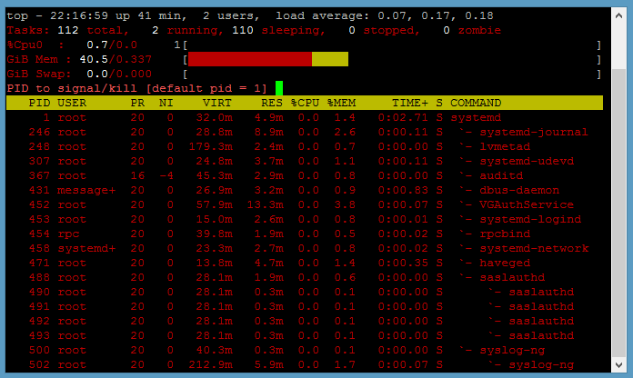

Common Tools
The following are some tools that you can use to troubleshoot:
- top
- ps
- netstat
- find
- locate
- df
- md5sum
- sha256sum
- strace
- file
- stat
- watch
- vmstat and fdisk
- lsof
- fuser
- ldd
- gdb
Note: Some of the examples in this section are marked as abridged with ellipsis (...).
top
The top tool monitors system resources, workloads, and performance. It can unmask problems caused by processes or applications overconsuming CPUs, time, or RAM.
To view a textual display of resource consumption, run the top command:
top
Use can use 'top' to kill a runaway or stalled process by typing k followed by its process ID (PID).

If the percent of CPU utilization is consistently high with little idle time, there might be a runaway process overconsuming CPUs. Restarting the service might solve the problem.
To troubleshoot an unknown issue, run Top in the background in batch mode to write its output to a file and collect data about performance:
top d 120 b >> top120second.output
For a list of options that filter top output and other information, see the man page for top.
ps
The ps tool shows the processes running on the machine. The ps tool derives flexibility and power from its options, all of which are covered in the tool's Photon OS man page:
man ps
You can use the following options of ps for troubleshooting:
Show processes by user:
ps auxShow processes and child processes by user:
ps auxfShow processes containing the string
ssh:ps aux | grep sshShow processes and the command and options with which they were started:
ps auxww
Example abridged output:
ps auxww
USER PID %CPU %MEM VSZ RSS TTY STAT START TIME COMMAND
root 1 0.0 0.9 32724 3300 ? Ss 07:51 0:32 /lib/systemd/systemd --switched-root --system --deserialize 22
netstat
The netstat command can identify bottlenecks causing performance issues. It lists network connections, listening sockets, port information, and interface statistics for different protocols. Examples:
netstat --statistics
netstat --listening
find
Use the find command to troubleshoot a Photon OS machine that has stopped working. The following command lists the files in the root directory that have changed in the past day:
find / -mtime -1
See the find manual. Take note of the security considerations listed in the find manual if you are using find to troubleshoot an appliance running on Photon OS.
locate
The locate command is a fast way to find files and directories you onlay have a keyword. This command is similar to find and part of the same findutils package preinstalled on the full version of Photon OS by default. It finds file names in the file names database.
Before you can use locate accurately, update its database:
updatedb
Then run locate to quickly find a file, such as any file name containing .network, which can be helpful to see all the system's .network configuration files. The following is an abridged example:
locate .network
/etc/dbus-1/system.d/org.freedesktop.network1.conf
/etc/systemd/network/10-dhcp-en.network
/usr/lib/systemd/network/80-container-host0.network
/usr/lib/systemd/network/80-container-ve.network
/usr/lib/systemd/system/busnames.target.wants/org.freedesktop.network1.busname
/usr/lib/systemd/system/dbus-org.freedesktop.network1.service
/usr/lib/systemd/system/org.freedesktop.network1.busnname
/usr/share/dbus-1/system-services/org.freedesktop.network1.service
The locate command is also a quick way to see whether a troubleshooting tool is installed on Photon OS. Examples:
locate strace
/usr/bin/strace
/usr/bin/strace-graph
/usr/bin/strace-log-merge
/usr/share/man/man1/strace.1.gz
/usr/share/vim/vim74/syntax/strace.vim
locate traceroute
In this example, the strace tool is installed but traceroute is not.
You can install traceroute from the Photon OS repository:
tdnf install traceroute
df
The df command reports the disk space available on the file system. Running out of disk space can lead an application to fail and a quick check of the available space makes sense as an early troubleshooting step:
df -h
The -h option prints out the available and used space in human-readable sizes. After checking the space, you should also check the number of available inodes. Too few available inodes can lead to difficult-to-diagnose problems:
df -i
md5sum
The md5sum tool calculates 128-bit RSA Data Security, Inc. MD5 Message Digest Algorithm hashes (a message digest, or digital signature, of a file) to uniquely identify a file and verify its integrity after file transfers, downloads, or disk errors when the security of the file is not in question.
md5sum can help troubleshooting installation issues by verifying that the version of Photon OS being installed matches the version on the Bintray download page. If, for instance, bytes were dropped during the download, the checksums will not match. Try downloading it again.
sha256sum
The sha256sum tool calculates the authenticity of a file to prevent tampering when security is a concern. Photon OS also includes shasum, sha1sum, sha384sum, and sha512sum. See the man pages for md3sum, sha256sum, and the other SHA utilities.
strace
The strace utility follows system calls and signals as they are executed so that you can see what an application, command, or process is doing. strace can trace failed commands, identify where a process obtains its configuration, monitor file activity, and find the location of a crash.
By tracing system calls, strace can help troubleshoot a broad range of problems, including issues with input-output, memory, interprocess communication, network usage, and application performance.
For troubleshooting a problem that gives off few or no clues, the following command displays every system call:
strace ls -al
With strace commands, you can route the output to a file to make it easier to analyze:
strace -o output.txt ls -al
strace can reveal the files that an application tries to open with the -eopen option. This combination can help troubleshoot an application that is failing because it is missing files or being denied access to a file it needs. If, for example, you see "No such file or directory" in the results of strace -eopen, something might be wrong:
strace -eopen sshd
open("/usr/lib/x86_64/libpam.so.0", O_RDONLY|O_CLOEXEC) = -1 ENOENT (No such file or directory)
open("/usr/lib/libpam.so.0", O_RDONLY|O_CLOEXEC) = 3
The results above indicate that the first file is missing because it is found in the next line. In other cases, the application might be unable to open one of its configuration files or it might be reading the wrong one. If the results say "permission denied" for one of the files, check the permissions of the file with ls -l or stat.
When troubleshooting with strace, you can include the process ID in its commands. Here's an example of how to find a process ID:
ps -ef | grep apache
You can then use strace to examine the file a process is working with:
strace -e trace=file -p 1719
A similar command can trace network traffic:
strace -p 812 -e trace=network
If an application is crashing, use strace to trace the application and then analyze what happens right before the application crashes.
You can also trace the child processes that an application spawns with the fork system call, and you can do so with systemctl commands that start a process to identify why an application crashes immediately or fails to start:
strace -f -o output.txt systemctl start httpd
Example: If journalctl is showing that networkd is failing, you can run strace to troubleshoot:
strace -o output.txt systemctl restart systemd-networkd
Then grep inside the results for something, such as exit or error:
grep exit output.txt
If the results indicate systemd-resolved is going wrong, you can then strace it:
strace -f -o output.txt systemctl restart systemd-resolved
file
The file command determines the file type, which can help troubleshoot problems when an application mistakes one type of file for another, leading it to errors. Example:
file /usr/sbin/sshd
/usr/sbin/sshd: ELF 64-bit LSB shared object, x86-64, version 1 (SYSV), dynamically linked, interpreter /lib64/ld-linux-x86-64.so.2, for GNU/Linux 2.6.32, stripped
stat
The stat command can help troubleshoot problems with files or the file system by showing the last date it was modified and other information. Example:
stat /dev/sda1
File: '/dev/sda1'
Size: 0 Blocks: 0 IO Block: 4096 block special file
Device: 6h/6d Inode: 6614 Links: 1 Device type: 8,1
Access: (0660/brw-rw----) Uid: ( 0/ root) Gid: ( 8/ disk)
Access: 2016-09-02 12:23:56.135999936 +0000
Modify: 2016-09-02 12:23:52.879999981 +0000
Change: 2016-09-02 12:23:52.879999981 +0000
Birth: -
On Photon OS, stat is handy to show permissions for a file or directory in both their absolute octal notation and their read-write-execute abbreviation; truncated example:
chmod 777 tester.md
stat tester.md
File: 'tester.md'
Size: 0 Blocks: 0 IO Block: 4096 regular empty file
Device: 801h/2049d Inode: 316385 Links: 1
Access: (0777/-rwxrwxrwx) Uid: ( 0/ root) Gid: ( 0/ root)
watch
The watch utility runs a command at regular intervals so you can observe how its output changes over time. watch can help dynamically monitor network links, routes, and other information when you are troubleshooting networking or performance issues. Examples:
watch -n0 --differences ss
watch -n1 --differences ip route
The following is an example with a screenshot of the output. This command monitors the traffic on your network links. The highlighted numbers are updated every second so you can see the traffic fluctuating:
watch -n1 --differences ip -s link show up

vmstat and fdisk
The vmstat tool displays statistics about virtual memory, processes, block input-output, disks, and CPU activity. This tool can help diagnose performance problems, especially system bottlenecks.
Its output on a Photon OS virtual machine running in VMware Workstation 12 Pro without a heavy load looks like this:
vmstat
procs -----------memory---------- ---swap-- -----io---- -system-- ------cpu-----
r b swpd free buff cache si so bi bo in cs us sy id wa st
0 0 0 5980 72084 172488 0 0 27 44 106 294 1 0 98 1 0
These codes are explained in the vmstat man page.
- If `r`, the number of runnable processes, is higher than 10, the machine is under stress; consider intervening to reduce the number of processes or to distribute some of the processes to other machines. In other words, the machine has a bottleneck in executing processes.
- If `cs`, the number of context switches per second, is really high, there may be too many jobs running on the machine.
- If `in`, the number of interrupts per second, is relatively high, there might be a bottleneck for network or disk IO.
You can investigate disk IO further by using vmstat's -d option to report disk statistics. The following is an abridged example on a machine with little load:
vmstat -d
disk- ------------reads------------ ------------writes----------- -----IO------
total merged sectors ms total merged sectors ms cur sec
ram0 0 0 0 0 0 0 0 0 0 0
ram1 0 0 0 0 0 0 0 0 0 0
loop0 0 0 0 0 0 0 0 0 0 0
loop1 0 0 0 0 0 0 0 0 0 0
sr0 0 0 0 0 0 0 0 0 0 0
sda 22744 676 470604 12908 72888 24949 805224 127692 0 130
The -D option summarizes disk statistics:
vmstat -D
26 disks
2 partitions
22744 total reads
676 merged reads
470604 read sectors
12908 milli reading
73040 writes
25001 merged writes
806872 written sectors
127808 milli writing
0 inprogress IO
130 milli spent IO
You can also get statistics about a partition. First, run the fdisk -l command to list the machine's devices. Then run vmstat -p with the name of a device to view its stats:
fdisk -l
Disk /dev/ram0: 4 MiB, 4194304 bytes, 8192 sectors
Units: sectors of 1 * 512 = 512 bytes
Sector size (logical/physical): 512 bytes / 4096 bytes
I/O size (minimum/optimal): 4096 bytes / 4096 bytes
...
Device Start End Sectors Size Type
/dev/sda1 2048 16771071 16769024 8G Linux filesystem
/dev/sda2 16771072 16777182 6111 3M BIOS boot
vmstat -p /dev/sda1
sda1 reads read sectors writes requested writes
22579 473306 78510 866088
See the vmstat man page for more options.
lsof
The lsof command lists open files. The tool's definition of an open file includes directories, libraries, streams, domain sockets, and Internet sockets. THis enables it to identify the files a process is using. Because a Linux system like Photon OS uses files to do its work, you can run lsof as root to see how the system is using them and to see how an application works.
If you cannot unmount a disk because it is in use, you can run lsof to identify the files on the disk that are being used.
The following is an example that shows the processes that are using the root directory:
lsof /root
COMMAND PID USER FD TYPE DEVICE SIZE/OFF NODE NAME
bash 879 root cwd DIR 8,1 4096 262159 /root
bash 1265 root cwd DIR 8,1 4096 262159 /root
sftp-serv 1326 root cwd DIR 8,1 4096 262159 /root
gdb 1351 root cwd DIR 8,1 4096 262159 /root
bash 1395 root cwd DIR 8,1 4096 262159 /root
lsof 1730 root cwd DIR 8,1 4096 262159 /root
You can do the same with an application or virtual appliance by running lsof with the user name or process ID of the app. The following example lists the open files used by the Apache HTTP Server:
lsof -u apache
Running the command with the -i option lists all the open network and Internet files, which can help troubleshoot network problems:
lsof -i
See the Unix socket addresses of a user like zookeeper:
lsof -u zookeeper -U
The following example shows the processes running on Ports 1 through 80:
lsof -i TCP:1-80
COMMAND PID USER FD TYPE DEVICE SIZE/OFF NODE NAME
httpd 403 root 3u IPv6 10733 0t0 TCP *:http (LISTEN)
httpd 407 apache 3u IPv6 10733 0t0 TCP *:http (LISTEN)
httpd 408 apache 3u IPv6 10733 0t0 TCP *:http (LISTEN)
httpd 409 apache 3u IPv6 10733 0t0 TCP *:http (LISTEN)
sshd 820 root 3u IPv4 11336 0t0 TCP *:ssh (LISTEN)
sshd 820 root 4u IPv6 11343 0t0 TCP *:ssh (LISTEN)
sshd 1258 root 3u IPv4 48040 0t0 TCP 198.51.100.143:ssh->198.51.100.1:49759 (ESTABLISHED)
sshd 1319 root 3u IPv4 50866 0t0 TCP 198.51.100.143:ssh->198.51.100.1:51054 (ESTABLISHED)
sshd 1388 root 3u IPv4 56438 0t0 TCP 198.51.100.143:ssh->198.51.100.1:60335 (ESTABLISHED)
You can also inspect the files opened by a process ID. The following example queries the files open by the systemd network service:
lsof -p 1917
COMMAND PID USER FD TYPE DEVICE SIZE/OFF NODE NAME
systemd-n 1917 systemd-network cwd DIR 8,1 4096 2 /
systemd-n 1917 systemd-network txt REG 8,1 887896 272389 /usr/lib/systemd/systemd-networkd
systemd-n 1917 systemd-network mem REG 8,1 270680 262267 /usr/lib/libnss_files-2.22.so
systemd-n 1917 systemd-network 0r CHR 1,3 0t0 5959 /dev/null
systemd-n 1917 systemd-network 1u unix 0x0000000000000000 0t0 45734 type=STREAM
systemd-n 1917 systemd-network 3u netlink 0t0 6867 ROUTE
systemd-n 1917 systemd-network 4u unix 0x0000000000000000 0t0 45744 type=DGRAM
systemd-n 1917 systemd-network 9u netlink 0t0 45754 KOBJECT_UEVENT
systemd-n 1917 systemd-network 12u a_inode 0,11 0 5955 [timerfd]
systemd-n 1917 systemd-network 13u IPv4 104292 0t0 UDP 198.51.100.143:bootpc
fuser
The fuser command identifies the process IDs of processes using files or sockets. The term process is, in this case, synonymous with user. To identify the process ID of a process using a socket, run fuser with its namespace option and specify tcp or udp and the name of the process or port. Examples:
fuser -n tcp ssh
ssh/tcp: 940 1308
fuser -n tcp http
http/tcp: 592 594 595 596
fuser -n tcp 80
80/tcp: 592 594 595 596
ldd
By revealing the shared libraries that a program depends on, ldd can help troubleshoot an application that is missing a library or finding the wrong one.
For example, if you get a "file not found" output, check the path to the library.
ldd /usr/sbin/sshd
linux-vdso.so.1 (0x00007ffc0e3e3000)
libpam.so.0 => (file not found)
libcrypto.so.1.0.0 => /usr/lib/libcrypto.so.1.0.0 (0x00007f624e570000)
You can also use the objdump command to show dependencies for a program's object files; example:
objdump -p /usr/sbin/sshd | grep NEEDED
gdb
The gdb tool is the GNU debugger. It lets you see inside a program while it executes or when it crashes so that you can catch errors as they occur. The gdb tool is typically used to debug programs written in C and C++. On Photon OS, gdb can help you determine why an application crashed. See the man page for gdb for instructions on how to run it.
For an extensive example on how to use gdb to troubleshoot Photon OS running on a VM when you cannot login to Photon OS, see the section on troubleshooting boot and logon problems.